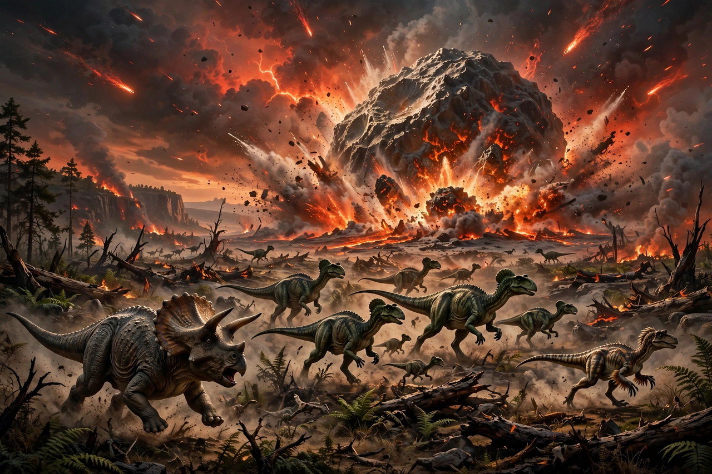

| Date | 66.043 million years ago |
|---|---|
| Type | Mass extinction |
| Species lost | ~75% of all species |
| Cause | Chicxulub impact; possibly aided by Deccan Traps volcanism |
| Notable victims | Non-avian dinosaurs, pterosaurs, ammonites, mosasaurs |

The Cretaceous–Paleogene (K–Pg) extinction event, also known as the Cretaceous–Tertiary (K–T) extinction, was a sudden mass extinction of some three-quarters of the plant and animal species on Earth, approximately 66 million years ago. The event marked the end of the Cretaceous Period and the Mesozoic Era, and the beginning of the Paleogene Period of the Cenozoic Era.
With the exception of some ectothermic species such as sea turtles and crocodilians, no tetrapods weighing more than 25 kilograms (55 pounds) survived. The extinction of the non-avian dinosaurs opened ecological niches that allowed mammals and birds to diversify dramatically.
The scientific consensus is that the extinction was caused primarily by the impact of a massive asteroid or comet at Chicxulub, Mexico. The hypothesis, proposed in 1980 by Luis Alvarez, his son Walter Alvarez and colleagues, rests on a global layer of iridium-rich clay at the boundary, shocked quartz, and the crater itself. Massive flood-basalt eruptions that formed the Deccan Traps in India, and the climate change they caused, may have stressed ecosystems before the impact.
In the oceans, ammonites, rudist bivalves, mosasaurs and plesiosaurs disappeared, along with most planktonic foraminifera and calcareous nannoplankton. On land, all non-avian dinosaurs, pterosaurs and many marsupial mammals perished. Organisms dependent on photosynthesis suffered most, while detritus-based food chains — and the freshwater animals they supported — survived at much higher rates.
Ecosystems took millions of years to recover fully, but the extinction cleared the way for the adaptive radiation of mammals, birds, and flowering plants that characterizes the Cenozoic world.
From Wikipedia, the free encyclopedia. Recreated from memory.